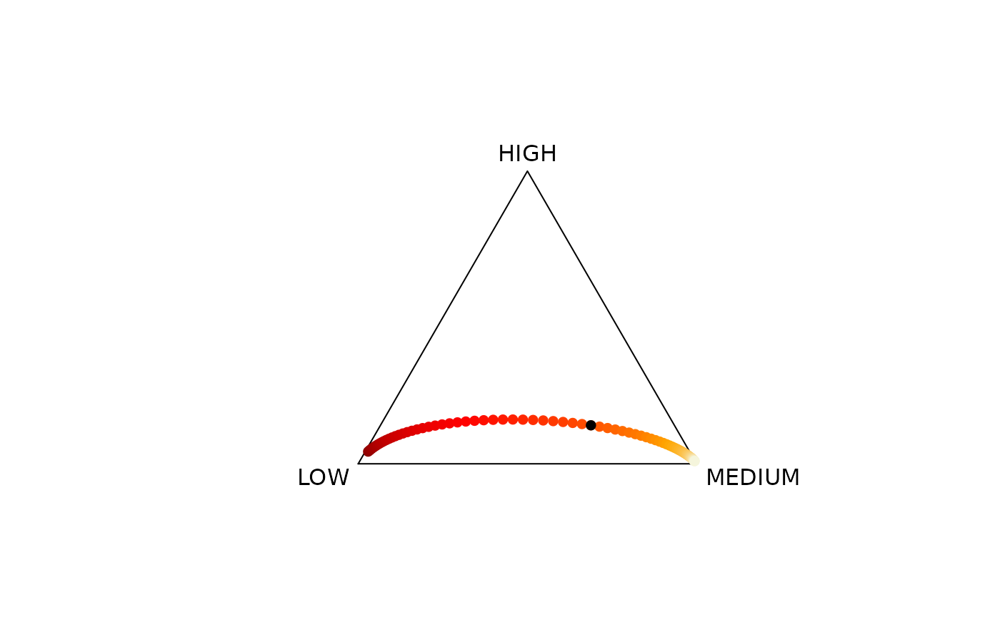

Getting started with CoDaImpact
Christine Thomas-Agnan
Lukas Dargel
Rodrigue Nasr
Source:vignettes/Vignette.Rmd
Vignette.RmdIntroduction
CoDaImpact is a package for the analysis of covariate impacts in compositional regression models. It is designed to work in conjunction with the compositions package. The compositions package is used to fit a regression model involving compositional variables and the CoDaImpact package provides new functions to interpret the estimation results.
The interface between the two packages is implemented by the
CoDaImpact::ToSimplex() function which converts the usual
lm object into an object of class lmCoDa. This new
class is associated with new interpretation methods that make use of
elasticities and semi-elasticities (see Morais and Thomas-Agnan, 2021)
and share ratio elasticities (see Dargel and Thomas-Agnan, 2023). A
finite increments interpretation is also provided in the function
CoDaImpact::VariationTable(). Finally, some visualization
tools are provided.
The Dargel and Thomas-Agnan (2023) paper is illustrated by vignette and all materials for reproducing the results in the paper and the vignette can be found on a dedicated GitHub repository.
The following three sections illustrate the use of the CoDaImpact package for three classes of regression models:
- scalar on composition case: the response is scalar and at least one of the explanatory variables is a composition,
- composition on scalar case: the response is a composition and the explanatory variables are scalar,
- composition on composition case: the response is a composition and at least one of the explanatory variables is a composition.
<! – Section 4 provides implementation details. –> <! – The
package contains three data sets used as examples:
rice_yields, car_market,
elections. –>
The following code loads all the packages required for this vignette. The CoDaImpact package has to be installed from GitHub for now and should be released on CRAN later on.
# remotes::install_github("LukeCe/CoDaImpact")
library(CoDaImpact)
library(compositions)Scalar on composition regression
This case is illustrated using an example from Trinh et al. (2023) studying the impact of climate change on rice yield in Vietnam.
Rice yield data
The rice_yields dataset contains the rice production
“YIELD” in each province of Vietnam, between 1987 and 2016. The data on
rice yields originate from “International Rice Research Institute”. The
maximum daily temperature data originate from the database “Climate
Prediction Center (CPC)”, created by “National Oceanic and Atmospheric
Administration (NOAA)”. The temperatures have been interpolated over the
63 provinces using areal interpolation methods. For this illustration,
we group the temperatures in three classes LOW ([-6,25.1]),
MEDIUM ([25.1,35.4]) and HIGH ([35.4,45]). The
precipitation data come from the project “Asian
Precipitation-Highly-Resolved Observational Data Integration Towards
Evaluation (APHRODITE)”.
summary(rice_yields)## PROVINCE REGION
## ANGIANG : 30 Central Highlands :180
## BACGIANG : 30 Mekong Delta :420
## BACKAN : 30 Midlands and Northern Mountainous Areas:390
## BACLIEU : 30 Northern and Coastal Central Region :420
## BACNINH : 30 Red River Delta :330
## BARIA-VUNGTAU: 30 Southeastern Area :150
## (Other) :1710
## YEAR YIELD PRECIPITATION
## Min. :1987 Min. :1.120 Min. :0.1693
## 1st Qu.:1994 1st Qu.:3.094 1st Qu.:1.1656
## Median :2002 Median :4.096 Median :1.4040
## Mean :2002 Mean :4.077 Mean :1.3824
## 3rd Qu.:2009 3rd Qu.:5.027 3rd Qu.:1.6411
## Max. :2016 Max. :6.637 Max. :3.7032
##
## TEMPERATURES.LOW TEMPERATURES.MEDIUM TEMPERATURES.HIGH
## Min. :0.0000003 Min. :0.5150684 Min. :0.00000020
## 1st Qu.:0.0027399 1st Qu.:0.6438356 1st Qu.:0.00273983
## Median :0.1945206 Median :0.7657533 Median :0.02185802
## Mean :0.1704263 Mean :0.7957867 Mean :0.03378702
## 3rd Qu.:0.3095891 3rd Qu.:0.9726024 3rd Qu.:0.05205488
## Max. :0.4699453 Max. :0.9999995 Max. :0.25479457
## The following plot is a ternary diagram of maximum temperature colored according to rice yield.
whitered_pal <- colorRampPalette(rev(c("beige","orange","red","darkred")))
top100 <- head(rice_yields, 250)
whitered_col <- whitered_pal(length(top_100$YIELD))## Error in eval(expr, envir, enclos): object 'top_100' not found
yield_top100 <- rank(top_100$YIELD,ties.method = "first")## Error in eval(expr, envir, enclos): object 'top_100' not found
ylcol_top100 <- whitered_col[yield_top100]## Error in eval(expr, envir, enclos): object 'whitered_col' not found
layout(matrix(1:2,ncol=2), width = c(2,1),height = c(1,1))
plot(acomp(top_100$TEMPERATURES),
col = ylcol_top100,
pch = 16)## Error in eval(expr, envir, enclos): object 'top_100' not found
legend_image <- as.raster(matrix(whitered_pal(20), ncol=1))
plot(c(0,2),c(0,1),type = 'n', axes = F,xlab = '', ylab = '', main = 'Rice yield')
yield_range <- range(top_100$YIELD)## Error in eval(expr, envir, enclos): object 'top_100' not found## Error in eval(expr, envir, enclos): object 'yield_range' not found## Error in eval(expr, envir, enclos): object 'yield_range' not found
rasterImage(legend_image, 0, 0, 1,1)Regression step with the compositions package
This model explains a scalar variable YIELD with a
combination of scalar and compositional variables. Before estimating, we
have to store our data in a data.frame in such a way that scalar
variables are column vectors and compositional variables are matrices.
In our dataset, the TEMPERATURES variable is already in the
matrix format.
sapply(rice_yields, class)## $PROVINCE
## [1] "factor"
##
## $REGION
## [1] "factor"
##
## $YEAR
## [1] "numeric"
##
## $YIELD
## [1] "numeric"
##
## $PRECIPITATION
## [1] "numeric"
##
## $TEMPERATURES
## [1] "matrix" "array"
rice_yields$TEMPERATURES[1,] #LOW, MEDIUM, and HIGH, are grouped in TEMPERATURES## LOW MEDIUM HIGH
## 0.0000002999999 0.9616434547947 0.0383562452054We continue to fit a regression model with the tools provided by base
R and the compositions package, in particular, the
lm() function and the alr() transformation for
the TEMPERATURES variable.
## [1] "lm"In the next step the function ToSimplex() transforms the
above output into a “lmCoDa” class which serves as the interface between
the lm-output and the interpretation functions.
## [1] "lmCoDa" "lm"The same can be achieved in a single step using the
lmCoDa() function.
fit_X_compo <- lmCoDa(YIELD ~ PRECIPITATION + alr(TEMPERATURES),data = rice_yields)
class(fit_X_compo)## [1] "lmCoDa" "lm"coef
The estimated parameters can be retrieved by the coef()
function. For a compositional explanatory variable the option
space allows choosing between the simplex version, the clr
version or the coordinate version of the parameters.
coef(fit_X_compo,space = "simplex")## YIELD
## (Intercept) 3.5835270
## PRECIPITATION 0.2528452
## LOW 0.3338069
## MEDIUM 0.3413303
## HIGH 0.3248628
coef(fit_X_compo,space = "clr")## YIELD
## (Intercept) 3.583526963
## PRECIPITATION 0.252845153
## LOW 0.001623843
## MEDIUM 0.023911877
## HIGH -0.025535720
coef(fit_X_compo) # by default use the log-ratio of the estimation, here alr## YIELD
## (Intercept) 3.583526963
## PRECIPITATION 0.252845153
## alr(TEMPERATURES)LOW 0.001623843
## alr(TEMPERATURES)MEDIUM 0.023911877fitted
The fitted() function retrieves the fitted values.
## 1 2 3 4 5 6
## 3.924848 3.736444 3.948922 4.013668 3.871424 3.952286residuals
The function residuals() retrieves the residuals.
## 1 2 3 4 5 6
## -0.5188733 -0.7565444 -1.6756716 -1.6125383 -1.2580224 -1.3394688Interpretation tools
Finite increments interpretation
Finite increments interpretation as in Muller et al. (2018) can be obtained using outputs in coordinate space. For the case of scalar on composition regression, more interpretations are found in Coenders and Pawlovsky-Glahn (2020). The different formulations they propose correspond to different parametrizations of the model and we illustrate below their interpretation based on clr coordinates.
Interpretation with ilr coordinates
Using the approach of Muller et al. (2018) we interpret an additive
increment for a specific ilr coordinate that corresponds to a so-called
principal balance. To use their interpretation we first need to
transform the parameters into the appropriate ilr space, which is
defined by the contrast matrix. The ilrBase() function
without further arguments leads to the principal balance of the last
component against all others.
V_TEMP <- ilrBase(D = 3)
V_TEMP## [,1] [,2]
## 1 -0.7071068 -0.4082483
## 2 0.7071068 -0.4082483
## 3 0.0000000 0.8164966We can use this contrast matrix and the parameters in clr space to obtain the ilr parameters.
clr_TEMP <- coef(fit_X_compo, space = "clr", split = TRUE)[["alr(TEMPERATURES)"]]
ilr_TEMP <- t(V_TEMP) %*% clr_TEMP
ilr_TEMP## YIELD
## [1,] 0.01576002
## [2,] -0.03127474The interpretation is that an additive increment of one unit in the
second ilr coordinate leads to an expected decrease in the rice yield by
0.03 tonnes per hectare. This increment means that the ratio between
HIGH and the geometric mean of LOW and
MEDIUM is approximately multiplied by \(\exp(1/0.82)\sim 3.44,\) where \(O.82\) is the element \((3,2)\) of the contrast matrix.
In terms of temperature distribution, the above increment implies
that the third component HIGH of the temperature
composition grows at the expense of the others (the geometric mean of
the other two) in a way that the ratio of LOW to
MEDIUM remains constant. This corresponds to a change in
the TEMPERATURES simplex in the direction of the vertex
HIGH. Changing for another vertex is simple by a
permutation of the rows of the contrast matrix.
This method only allows to evaluate the impacts of changing a compositional covariate in the direction of a vertex. In Dargel and Thomas-Agnan (2023) it is shown how the impact of more general changes in explanatory compositions can be interpreted.
Interpretation with clr coordinates
The clr parameter estimates for the temperatures are given by:
clr_TEMP## YIELD
## LOW 0.001623843
## MEDIUM 0.023911877
## HIGH -0.025535720We follow Coenders and Pawlovsky-Glahn (2020) but without changing
the base of the logarithm and the normalization constant. In these
conditions, the first clr parameter for the level LOW of
temperature is interpreted as the expected change of the response when
the ratio between LOW and the geometric mean of
LOW, MEDIUM and HIGH is
multiplied by \(\exp(1)\sim 2.7\). The
resulting change in expected yield is therefore an increase of \(0.0016\) tons per hectare.
Variation scenario in the simplex space
To evaluate the impact of a given compositional covariate, we create scenarios of changes in its simplex space described by a linear equation \(x(h)=x(0)\oplus h\odot u,\) where \(x(0)\) is the initial point, \(h\) is the signed-intensity of change and \(u\) is a vector of the simplex defining the direction of change. We then compute the predicted value of \(y(h)\) corresponding to \(x(h)\).
We consider a change in the direction of the vertex “LOW” of the variable “TEMPERATURE”, and we predict new values of the response variable according to the change in percentage points of this vertex.
VariationScenario(
fit_X_compo,
Xvar = "TEMPERATURES",
Xdir = c(0.2, 0.5, 0.3),
inc_size = 2,
n_steps = 5,
add_opposite = TRUE,
obs=43)## YIELD X.LOW X.MEDIUM X.HIGH
## -5 3.819922 0.9989636850642 0.0000018748701 0.0010344400657
## -4 3.855516 0.9963715150059 0.0000314423589 0.0035970426351
## -3 3.891110 0.9870530721012 0.0005237290466 0.0124231988521
## -2 3.926704 0.9498471187296 0.0084740730707 0.0416788081997
## -1 3.962298 0.7674684242080 0.1151254523609 0.1174061234311
## 0 3.997893 0.2465753931507 0.6219176838356 0.1315069230137
## 1 4.033487 0.0220905961112 0.9368346502406 0.0410747536483
## 2 4.069081 0.0013878377613 0.9896156353605 0.0089965268782
## 3 4.104675 0.0000832426310 0.9980354895354 0.0018812678336
## 4 4.140269 0.0000049585605 0.9996043543177 0.0003906871218
## 5 4.175863 0.0000002949985 0.9999186719961 0.0000810330054For a good visual impression, it is better to use a smaller step size and a larger number of steps. Below is the ternary diagram showing the path in the simplex: the initial point is in black and the other ones are colored according to the value of rice yield.
VS2 <- VariationScenario(
fit_X_compo,
Xvar = "TEMPERATURES",
Xdir = c(0.2, 0.5, 0.3),
inc_size = .1,
n_steps = 40,
add_opposite = TRUE,
obs=43)
yield_color <- whitered_pal(length(VS2$YIELD))
yield_color <- yield_color[rank(VS2$YIELD,ties.method = "first")]
plot(acomp(VS2$X), col = yield_color, pch = 16)
plot(acomp(VS2["0", "X"]), add = TRUE, pch = 16)
Infinitesimal increments interpretation
Semi-elasticities
The use of semi-elasticities for the interpretation of compositional
covariates is described in Morais and Thomas-Agnan (2021). For a scalar
on composition model the Impacts() method computes the
semi-elasticities for all compositional covariates.
RY_Impacts <- Impacts(fit_X_compo, Xvar = "TEMPERATURES")
RY_Impacts # here, the semi-elasticity is computed for the variable TEMPERATURES ## YIELD
## LOW 0.001623843
## MEDIUM 0.023911877
## HIGH -0.025535720Increments approach
Dargel and Thomas-Agnan (2023) use semi-elasticities to interpret
infinitesimal changes due to variation scenarios. The function
VariationTable computes the impact of incremental changes
in covariates on the response variable. The covariate increments,
corresponding to linear changes in the simplex, are indexed by a
direction vector and a signed intensity parameter inc_size
and are specific to a given observation. Two cases are illustrated below
with a direction pointing to a vertex of the simplex and a general
direction. For the vertex direction, the inc_rate is
related to the inc_size parameter and measures the relative
change of the share corresponding to this vertex.
Infinitesimal increment: direction pointing to a vertex
The direction pointing to a vertex corresponds to the increments
considered by Muller et al. (2018). For example, we can measure the
change caused by increasing the HIGH share of the
TEMPERATURES variable by \(5\%\), assuming that the ratio between the
other two components remains constant, using the function
VariationTable().
VariationTable(
fit_X_compo,
obs = 1, # indicator of the observation (1 is default)
Xvar = "TEMPERATURES", # covariate for which the impact is computed
Xdir = 'HIGH', # vertex in the covariate simplex
inc_rate = 0.05) # signed intensity ## YIELD
## Initial value 3.924848006
## New value 3.919636938
## Semi elasticity -0.031274742
## Variation in % -0.132771206
## Variation in units -0.005211068The interpretation of this result is as follows: a \(5\%\) change of the HIGH share
assuming the ratio between the LOW and the
MEDIUM share remains constant will result in a \(-0.0052\) unit change in
YIELD.
Infinitesimal increment: general direction
Let us now consider changing the covariate in the direction \((0.2,0.55,0.25)\), with an increment size of \(0.05\). Note that this direction vector will be normalized before being used within the function, and will later be given as output in attributes.
fit_X_compo.varTab <- VariationTable(
fit_X_compo,
obs = 10, # indicator of the observation
Xvar = "TEMPERATURES", # covariate for which the impact is computed
Xdir = c(0.2,0.55,0.25), # general direction in the covariate simplex
inc_size = 0.05) # signed intensity
fit_X_compo.varTab## YIELD
## Initial value 4.010224763
## New value 4.015157689
## Semi elasticity 0.024601746
## Variation in % 0.123008728
## Variation in units 0.004932926
attributes(fit_X_compo.varTab)## $names
## [1] "YIELD"
##
## $class
## [1] "data.frame"
##
## $row.names
## [1] "Initial value" "New value" "Semi elasticity"
## [4] "Variation in %" "Variation in units"
##
## $`X(0)`
## LOW MEDIUM HIGH
## "0.0000002999999" "0.9506845561646" "0.0493151438356"
## attr(,"class")
## [1] "acomp"
##
## $`X(h)`
## [1] 0.0000002805874 0.9531436237124 0.0468560957002
##
## $Xdir
## [1] 0.1616218 0.6208904 0.2174878
##
## $inc_size
## [1] 0.05
##
## $inc_rates
## [1] -0.064708144 0.002586628 -0.049863955The move between the temperature share vector of \((0.0000002999999, 0.9506845561646,
0.0493151438356)\) to \((0.0000002805874, 0.9531436237124,
0.0468560957002)\) results in an increase of the
YIELD by \(0.004932926\)
units. Note that the Aitchison distance between these two points is
equal to the increment size \(0.05\).
Composition on scalar regression
This case is illustrated using an example from Morais et al. (2018) studying the impact of some socio-economic variables on the market shares in each of the five market segments A, B, C, D and E.
Car market data
This dataset shows monthly data on the French automobile market
between 2003 and 2015. The market is divided into 5 main segments
(SEG_A to SEG_E), according to the size of the
vehicle chassis. Apart from data on market shares, we have four
classical variables, such as HOUSEHOLD_EXPENDITURE, gross
domestic product (GDP), the average national price of
diesel fuel (GAS_PRICE), and
SCRAPPING_SUBSIDY. We also have the DATE,
generally the beginning of each month in which the sale has taken
place.
summary(car_market)## DATE SEG_A SEG_B SEG_C
## Min. :2003-01-01 Min. :0.05178 Min. :0.3051 Min. :0.2959
## 1st Qu.:2006-02-22 1st Qu.:0.06979 1st Qu.:0.3721 1st Qu.:0.3398
## Median :2009-04-16 Median :0.07841 Median :0.3909 Median :0.3593
## Mean :2009-04-16 Mean :0.08737 Mean :0.3910 Mean :0.3654
## 3rd Qu.:2012-06-08 3rd Qu.:0.09893 3rd Qu.:0.4125 3rd Qu.:0.3883
## Max. :2015-08-01 Max. :0.16036 Max. :0.4576 Max. :0.4484
## SEG_D SEG_E GDP HOUSEHOLD_EXPENDITURE
## Min. :0.06481 Min. :0.01845 Min. :134773 Min. :71647
## 1st Qu.:0.09159 1st Qu.:0.02596 1st Qu.:151629 1st Qu.:81181
## Median :0.10665 Median :0.03619 Median :164700 Median :88666
## Mean :0.11257 Mean :0.04362 Mean :162472 Mean :86882
## 3rd Qu.:0.13434 3rd Qu.:0.06109 3rd Qu.:173575 3rd Qu.:93219
## Max. :0.18964 Max. :0.10123 Max. :182620 Max. :96548
## GAS_PRICE SCRAPPING_SUBSIDY
## Min. :0.755 Min. :0.0000
## 1st Qu.:1.019 1st Qu.:0.0000
## Median :1.125 Median :0.0000
## Mean :1.140 Mean :0.1645
## 3rd Qu.:1.317 3rd Qu.:0.0000
## Max. :1.445 Max. :1.0000
opar <- par(mar=c(5.1, 4.1, 4.1, 8.1), xpd=TRUE)
plot(x = car_market$DATE, y = car_market$SEG_A,type = "l", col = "red",
main = "French vehicles market shares from 2003 to 2015",
xlab = "DATE", ylab = "VALUE", ylim = c(0,0.5))
lines(x = car_market$DATE, y = car_market$SEG_B,type = "l", col = "blue" )
lines(x = car_market$DATE, y = car_market$SEG_C,type = "l", col = "green")
lines(x = car_market$DATE, y = car_market$SEG_D,type = "l", col = "orange")
lines(x = car_market$DATE, y = car_market$SEG_E,type = "l", col = "black")
legend("topright",
legend = paste0("Segment ", LETTERS[1:5]),
col = c("red", "blue", "green", "orange", "black"),
lty = 1,
inset=c(-0.35,0))
par(opar)Regression step
We directly use the lmCoDa() function to fit a
regression model explaining the market shares as a function of household
expenditure, GDP, gas price and an indicator of the scrapping incentive
period. As previously, the compositional variable must be included as a
matrix.
Below we transform the response by an ilr, using the
ilr() function of the compositions
package.
fit_Y_compo <- lmCoDa(
ilr(SEG) ~ HOUSEHOLD_EXPENDITURE + GDP + GAS_PRICE + SCRAPPING_SUBSIDY,
data=car_market)coef
The estimated coefficients are retrieved using the
coef() function.
coef(fit_Y_compo, space = "simplex") # coefficients in the simplex## SEG_A SEG_B SEG_C SEG_D SEG_E
## (Intercept) 0.00510613 0.02979117 0.0299574 0.1738140 0.7613313
## HOUSEHOLD_EXPENDITURE 0.20004025 0.20000871 0.2000042 0.1999921 0.1999548
## GDP 0.19998123 0.19999792 0.2000000 0.2000025 0.2000184
## GAS_PRICE 0.13249844 0.12769598 0.1583048 0.1951823 0.3863185
## SCRAPPING_SUBSIDY 0.25071823 0.19046324 0.1729588 0.1825495 0.2033102
coef(fit_Y_compo) # ... in ilr space## ilr(SEG)1 ilr(SEG)2 ilr(SEG)3
## (Intercept) 1.24717388192 0.72459957006 2.03502320226
## HOUSEHOLD_EXPENDITURE -0.00011150825 -0.00008293645 -0.00011093018
## GDP 0.00005900412 0.00004246356 0.00004089033
## GAS_PRICE -0.02610541082 0.16036864757 0.29475342664
## SCRAPPING_SUBSIDY -0.19436277707 -0.19093033990 -0.08827046806
## ilr(SEG)4
## (Intercept) 2.8974651795
## HOUSEHOLD_EXPENDITURE -0.0002527637
## GDP 0.0001027078
## GAS_PRICE 0.8389659267
## SCRAPPING_SUBSIDY 0.0279658835fitted
For models with compositional response the fitted() also
has a space argument allowing to retrieve the fitted values in
coordinate space, clr space or in the simplex.
## SEG_A SEG_B SEG_C SEG_D SEG_E
## 1 "0.06550853" "0.3518854" "0.3312294" "0.1636691" "0.08770752"
## 2 "0.06506734" "0.3490900" "0.3309363" "0.1646582" "0.09024814"
## 3 "0.06450031" "0.3455116" "0.3305134" "0.1659005" "0.09357414"
## 4 "0.06266230" "0.3512741" "0.3315112" "0.1640017" "0.09055064"
## 5 "0.06327936" "0.3553624" "0.3319284" "0.1625658" "0.08686404"
## 6 "0.06335595" "0.3558713" "0.3319754" "0.1623847" "0.08641256"
## attr(,"class")
## [1] "acomp"## SEG_A SEG_B SEG_C SEG_D SEG_E
## 1 -0.9018499 0.7792754 0.7187808 0.01381641 -0.6100227
## 2 -0.9123999 0.7675070 0.7141032 0.01604937 -0.5852597
## 3 -0.9258272 0.7525292 0.7081499 0.01889132 -0.5537431
## 4 -0.9439949 0.7798119 0.7219066 0.01812205 -0.5758457
## 5 -0.9286494 0.7969295 0.7287105 0.01487411 -0.6118646
## 6 -0.9267313 0.7990692 0.7295609 0.01446811 -0.6163670## [,1] [,2] [,3] [,4]
## 1 1.188735 0.6369230 -0.1601446 -0.6820261
## 2 1.187874 0.6422151 -0.1504177 -0.6543402
## 3 1.186777 0.6489506 -0.1380381 -0.6191037
## 4 1.218916 0.6564617 -0.1453068 -0.6438151
## 5 1.220169 0.6487640 -0.1594550 -0.6840855
## 6 1.220325 0.6478018 -0.1612235 -0.6891192
## attr(,"class")
## [1] "rmult"resid
The same functionality is available for the residuals.
## SEG_A SEG_B SEG_C SEG_D SEG_E
## 1 "0.2100350" "0.2099886" "0.1900386" "0.1819359" "0.2080019"
## 2 "0.2241523" "0.1884051" "0.2165972" "0.1887411" "0.1821043"
## 3 "0.1990092" "0.1761677" "0.2160209" "0.2230781" "0.1857242"
## 4 "0.2015812" "0.2391805" "0.2238778" "0.2106168" "0.1247437"
## 5 "0.2229353" "0.2138702" "0.2243390" "0.1821381" "0.1567175"
## 6 "0.1971703" "0.2164442" "0.2369534" "0.1682997" "0.1811324"
## attr(,"class")
## [1] "acomp"## SEG_A SEG_B SEG_C SEG_D SEG_E
## 1 0.050722716 0.05050182 -0.04932391 -0.09289665 0.04099603
## 2 0.117542428 -0.05618878 0.08325649 -0.05440689 -0.09020325
## 3 -0.001038231 -0.12295300 0.08098568 0.11313241 -0.07012686
## 4 0.032029651 0.20305589 0.13693794 0.07587790 -0.44790138
## 5 0.117957913 0.07644556 0.12423438 -0.08415879 -0.23447906
## 6 -0.006779935 0.08648514 0.17701586 -0.16510139 -0.09161968## [,1] [,2] [,3] [,4]
## 1 -0.0001561993 -0.08159755 -0.09543328 0.04583496
## 2 -0.1228465125 0.04293111 -0.08886310 -0.10085030
## 3 -0.0862067605 0.11674374 0.11039017 -0.07840421
## 4 0.1209338141 0.01583609 -0.04168174 -0.50076897
## 5 -0.0293536636 0.02207206 -0.16486648 -0.26215556
## 6 0.0659483699 0.11199333 -0.21709099 -0.10243392
## attr(,"class")
## [1] "rmult"Interpretation tools
Finite increments interpretation
Interpretation with ilr coordinates
Finite increments interpretation as in Muller et al. (2018) can be obtained using coordinate space outputs.
coef(fit_Y_compo)## ilr(SEG)1 ilr(SEG)2 ilr(SEG)3
## (Intercept) 1.24717388192 0.72459957006 2.03502320226
## HOUSEHOLD_EXPENDITURE -0.00011150825 -0.00008293645 -0.00011093018
## GDP 0.00005900412 0.00004246356 0.00004089033
## GAS_PRICE -0.02610541082 0.16036864757 0.29475342664
## SCRAPPING_SUBSIDY -0.19436277707 -0.19093033990 -0.08827046806
## ilr(SEG)4
## (Intercept) 2.8974651795
## HOUSEHOLD_EXPENDITURE -0.0002527637
## GDP 0.0001027078
## GAS_PRICE 0.8389659267
## SCRAPPING_SUBSIDY 0.0279658835Following Muller et al. (2018), using the default contrast matrix below, we can interpret the impact of an additive change in the household expenditure variable on the ratio between segment E and the geometric mean of the other segments.
ilrBase(D = 5) # default contrast matrix## [,1] [,2] [,3] [,4]
## 1 -0.7071068 -0.4082483 -0.2886751 -0.2236068
## 2 0.7071068 -0.4082483 -0.2886751 -0.2236068
## 3 0.0000000 0.8164966 -0.2886751 -0.2236068
## 4 0.0000000 0.0000000 0.8660254 -0.2236068
## 5 0.0000000 0.0000000 0.0000000 0.8944272If the household expenditure, expressed in chain-linked prices of the previous year, increases by \(250\) million euros, approximately one percent of its range, the ratio between segment E and the geometric mean of the other segments is multiplied by \(\exp((-0.0025) * 250/0.89)\sim 0.49,\) hence approximately divided by two. However, it is difficult to describe the simultaneous changes in the ratio between the other segments with this approach.
Variation scenario in real space
In this part, we are interested in presenting on a graph the
variations of the fitted shares corresponding to a change scenario of
the variable “HOUSEHOLD_EXPENDITURE”. In this case, since the variable
to be changed is scalar, the scenario of change is just a regular grid
of values defined by a step size, a number of steps and an initial
observation. The first step VariationScenario() creates the
grid for the covariate (\(X\)) and
computes the corresponding fitted values (\(Y\)).
vs_exp2 <- VariationScenario(
fit_Y_compo,
Xvar = "HOUSEHOLD_EXPENDITURE",
obs = 1,
inc_size = 100,
n_steps = 150,
add_opposite = TRUE)
plot(x = vs_exp2$HOUSEHOLD_EXPENDITURE, y = vs_exp2$Y[,1],type = "l", col = "red",
main = "Variation scenario of houshold expenditure for observation 1",
xlab = "Household expenditure", ylab = "Market share of segment")
lines(x = vs_exp2$HOUSEHOLD_EXPENDITURE, y = vs_exp2$Y[,2],type = "l", col = "blue" )
lines(x = vs_exp2$HOUSEHOLD_EXPENDITURE, y = vs_exp2$Y[,3],type = "l", col = "green")
lines(x = vs_exp2$HOUSEHOLD_EXPENDITURE, y = vs_exp2$Y[,4],type = "l", col = "orange")
lines(x = vs_exp2$HOUSEHOLD_EXPENDITURE, y = vs_exp2$Y[,5],type = "l", col = "black")
legend("topleft",
legend = paste0("SEG_", LETTERS[1:5]),
col = c("red", "blue", "green", "orange", "black"),
lty = 1)Infinitesimal increments interpretation
Semi-elasticities
The use of semi-elasticities for the interpretation of compositional
covariates is described in Morais and Thomas-Agnan (2021). The only
difference with the previous section is that it involves derivatives of
the logarithm of the \(Y\) components
with respect to \(X\), in contrast with
derivatives of \(Y\) with respect to
the logarithm of the components of \(X\). The Impacts() function
computes these elasticities.
Impacts(fit_Y_compo,
Xvar = "HOUSEHOLD_EXPENDITURE",
obs=4)## SEG_A SEG_B SEG_C SEG_D
## HOUSEHOLD_EXPENDITURE 0.0001933935 0.00003569699 0.00001296924 -0.00004740457
## SEG_E
## HOUSEHOLD_EXPENDITURE -0.0002339346
## attr(,"obs")
## [1] 4The semi-elasticities are then used for evaluating the impact on \(Y\) of an infinitesimal additive change of any of the scalar explanatory variables.
Infinitesimal Increments approach
For example, we can measure the change caused by an increase of \(2500\) million euros in
HOUSEHOLD_EXPENDITURE using the function
VariationTable().
fit_Y_compo.VarTab <- VariationTable(
fit_Y_compo, # model output
Xvar = "HOUSEHOLD_EXPENDITURE", # variable to be changed
inc_size = 2500, # additive increment of X
obs = 1) # observation index
fit_Y_compo.VarTab## SEG_A SEG_B SEG_C SEG_D
## Initial parts 0.065508533 0.35188544895 0.33122939357 0.16366910523
## New parts 0.096976210 0.38218939438 0.34093421621 0.14376119345
## Semi elasticity 0.000192144 0.00003444751 0.00001171976 -0.00004865405
## Variation in % 48.035998361 8.61187796119 2.92994004579 -12.16351231860
## Variation in % points 3.146767770 3.03039454268 0.97048226455 -1.99079117759
## SEG_E
## Initial parts 0.0877075195
## New parts 0.0361389855
## Semi elasticity -0.0002351841
## Variation in % -58.7960237233
## Variation in % points -5.1568533997For the first month, an increase of \(2500\) million euros of total
HOUSEHOLD_EXPENDITURE will result in a decrease of 2
percentage points in the “SEG_D” share, and an increase of 3 percentage
points in the “SEG_B” share. We can visualize these changes more
globally with a barplot.
Composition on composition regression
This case is illustrated using an example from Nguyen et. al (2020) studying the impact of some socio-economic variables on the outcome of French departmental elections in 2015.
Election data
This dataset contains the vote shares for 3 groups of parties
(left, right, extreme_right) in
different departments of France in the 2015 French departmental election
for 95 departments in France. The election results originate from the
French ‘Ministry of the Interior’. The corresponding socio-economic data
(for 2014) have been downloaded from the INSEE website. The regression involves
the following explanatory variables:
- four scalar variables: the unemployment rate
(
unemp_rate), the proportion of people who own assets (asset_owner_rate), the proportion of people who pay income tax (income_taxpayer_rate), the proportion of foreigners (forgeigner_rate). - two compositional variables:
- the Age variable has three levels:
Age_1839for people from 18 to 39 years old,Age_4064for people from 40 to 64 years old, andAge_65plusfor people over 65. - Diploma has three levels:
Educ_BeforeHighschoolfor people with at most some secondary education,Educ_Highschoolfor people with at least secondary education and at most a high school diploma, andEduc_Higherfor people with a university diploma.
- the Age variable has three levels:
## left right extreme_right
## Min. :0.1740 Min. :0.1195 Min. :0.05563
## 1st Qu.:0.3108 1st Qu.:0.3296 1st Qu.:0.19956
## Median :0.3598 Median :0.3760 Median :0.26102
## Mean :0.3682 Mean :0.3841 Mean :0.24777
## 3rd Qu.:0.4322 3rd Qu.:0.4421 3rd Qu.:0.30400
## Max. :0.7228 Max. :0.6367 Max. :0.41485
summary(election[4:6])## Age_1839 Age_4064 Age_65plus
## Min. :0.2270 Min. :0.3836 Min. :0.1536
## 1st Qu.:0.2756 1st Qu.:0.4208 1st Qu.:0.2243
## Median :0.3077 Median :0.4315 Median :0.2613
## Mean :0.3140 Mean :0.4295 Mean :0.2566
## 3rd Qu.:0.3486 3rd Qu.:0.4384 3rd Qu.:0.2872
## Max. :0.4320 Max. :0.4511 Max. :0.3364
summary(election[7:9])## Educ_BeforeHighschool Educ_Highschool Educ_Higher
## Min. :0.3484 Min. :0.1444 Min. :0.1617
## 1st Qu.:0.5613 1st Qu.:0.1596 1st Qu.:0.2034
## Median :0.5918 Median :0.1677 Median :0.2324
## Mean :0.5889 Mean :0.1689 Mean :0.2422
## 3rd Qu.:0.6349 3rd Qu.:0.1780 3rd Qu.:0.2670
## Max. :0.6867 Max. :0.2234 Max. :0.4998
summary(election[10:13])## unemp_rate asset_owner_rate income_taxpayer_rate forgeigner_rate
## Min. :0.08353 Min. :0.3998 Min. :0.4499 Min. :0.01342
## 1st Qu.:0.10513 1st Qu.:0.5894 1st Qu.:0.5143 1st Qu.:0.02994
## Median :0.11648 Median :0.6189 Median :0.5432 Median :0.04436
## Mean :0.11731 Mean :0.6158 Mean :0.5525 Mean :0.05049
## 3rd Qu.:0.12423 3rd Qu.:0.6645 3rd Qu.:0.5777 3rd Qu.:0.05886
## Max. :0.16246 Max. :0.7229 Max. :0.7452 Max. :0.22824Regression step
First, we must ensure that all compositional variables are stored as a matrix.
election$VOTE <- as.matrix(election[,c("left","right","extreme_right")])
election$AGE <- as.matrix(election[,c("Age_1839","Age_4064","Age_65plus")])
election$EDUC <- as.matrix(election[,c("Educ_BeforeHighschool","Educ_Highschool","Educ_Higher")])The next step consists of applying a log-ratio transformation (alr or
ilr) to the compositional variables and then using the “lm” function to
perform regression in coordinates space. In this example, the response
variable, VOTE, is transformed by an ilr, the variable
Age is transformed by an alr, and EDUC is
transformed by an ilr.
fit_YX_compo <- lmCoDa(
ilr(VOTE) ~
alr(AGE) + unemp_rate + asset_owner_rate +
ilr(EDUC) + income_taxpayer_rate + forgeigner_rate,
data = election)With the coef() function we can access the estimated
coefficients in coordinate space, as well as in the simplex:
coef(fit_YX_compo)## ilr(VOTE)1 ilr(VOTE)2
## (Intercept) -0.07020983 -6.9109264
## alr(AGE)Age_1839 -0.10463431 0.5592385
## alr(AGE)Age_4064 0.23336593 -0.2278400
## unemp_rate -8.16701488 17.2562747
## asset_owner_rate -2.96545832 2.8971115
## ilr(EDUC)1 -1.21486657 -2.2816886
## ilr(EDUC)2 -0.76776003 0.9077666
## income_taxpayer_rate 2.91875389 1.7559045
## forgeigner_rate -1.45607088 -0.5496067
coef(fit_YX_compo, space = "simplex")## left right extreme_right
## (Intercept) 0.5247472819482 0.47514740845404074 0.0001053096
## Age_1839 -0.1543205229982 -0.30229578360147996 0.4566163066
## Age_4064 -0.0719993474717 0.25802991714545126 -0.1860305697
## Age_65plus 0.2263198704699 0.04426586645602869 -0.2705857369
## unemp_rate 0.0000002135099 0.00000000000205759 0.9999997865
## asset_owner_rate 0.1892554610820 0.00285566966007836 0.8078888693
## Educ_BeforeHighschool -1.3364388553996 0.32169418104455588 1.0147446744
## Educ_Highschool 1.1957612695548 0.42416115809884591 -1.6199224277
## Educ_Higher 0.1406775858448 -0.74585533914340196 0.6051777533
## income_taxpayer_rate 0.0076516015515 0.47468732197433899 0.5176610765
## forgeigner_rate 0.7635086355050 0.09739055674009536 0.1391008078Standard errors and confidence intervals are provided for the clr of
parameters by the function confint(). The following example
is for the case of the compositional explanatory variable
AGE.
confint(fit_YX_compo, parm = "AGE")## Y X EST SD 2.5 % 97.5 %
## 1 left Age_1839 -0.15432052 0.4909885 -1.1303733 0.82173229
## 2 right Age_1839 -0.30229578 0.3747233 -1.0472210 0.44262946
## 3 extreme_right Age_1839 0.45661631 0.3953292 -0.3292722 1.24250484
## 4 left Age_4064 -0.07199935 0.6721951 -1.4082790 1.26428030
## 5 right Age_4064 0.25802992 0.5130205 -0.7618211 1.27788092
## 6 extreme_right Age_4064 -0.18603057 0.5412314 -1.2619630 0.88990183
## 7 left Age_65plus 0.22631987 0.1919484 -0.1552609 0.60790069
## 8 right Age_65plus 0.04426587 0.1464954 -0.2469573 0.33548902
## 9 extreme_right Age_65plus -0.27058574 0.1545511 -0.5778232 0.03665172When providing the argument y_ref the function returns
the same information for the differences of clr parameter values, which
coincide with differences in elasticities (Dargel and Thomas-Agnan
2023).
confint(fit_YX_compo, parm = "AGE", y_ref = "left")## Y_ref Y X DIFF SD 2.5 % 97.5 %
## 1 left left Age_1839 0.0000000 0.0000000 0.0000000 0.0000000
## 2 left right Age_1839 -0.1479753 0.7789026 -1.6963824 1.4004319
## 3 left extreme_right Age_1839 0.6109368 0.8088834 -0.9970701 2.2189437
## 4 left left Age_4064 0.0000000 0.0000000 0.0000000 0.0000000
## 5 left right Age_4064 0.3300293 1.0663682 -1.7898406 2.4498991
## 6 left extreme_right Age_4064 -0.1140312 1.1074138 -2.3154970 2.0874346
## 7 left left Age_65plus 0.0000000 0.0000000 0.0000000 0.0000000
## 8 left right Age_65plus -0.1820540 0.3045064 -0.7873926 0.4232846
## 9 left extreme_right Age_65plus -0.4969056 0.3162271 -1.1255443 0.1317331The following example is for the case of the scalar explanatory
variable unemp_rate.
confint(fit_YX_compo, parm = "unemp_rate")## Y X EST SD 2.5 % 97.5 %
## 1 left unemp_rate -1.269893 2.465914 -6.171968 3.632182
## 2 right unemp_rate -12.819796 1.881990 -16.561068 -9.078524
## 3 extreme_right unemp_rate 14.089689 1.985480 10.142685 18.036693In this case the difference in clr parameters coincides with a semi-elasticities difference.
confint(fit_YX_compo, parm = "unemp_rate", y_ref = "left")## Y_ref Y X DIFF SD 2.5 % 97.5 %
## 1 left left unemp_rate 0.00000 0.000000 0.000000 0.000000
## 2 left right unemp_rate -11.54990 3.911918 -19.326539 -3.773267
## 3 left extreme_right unemp_rate 15.35958 4.062492 7.283616 23.435549Fitted values and residuals, both in the simplex space, can be accessed directly using fitted, and residuals functions as shown previously.
Interpretation tools
Finite increments
Interpretation with ilr coordinates
Finite increments interpretation as in Muller et al. (2018) can be
obtained using coordinate space outputs, but this time we need to
consider two contrast matrices, one for the response and one for the
explanatory composition. In the present model, the VOTE and
the EDUC compositions are both ilr transformed with the
default contrast matrix.
ilrBase(D = 3)## [,1] [,2]
## 1 -0.7071068 -0.4082483
## 2 0.7071068 -0.4082483
## 3 0.0000000 0.8164966This means we can interpret the element in the last row and last
column of the corresponding parameter matrix that is expressed using the
ilr spaces of both the response VOTE and the “EDUC”
variables (whose contrast matrices coincide in our example).
coef(fit_YX_compo, split = TRUE)[["ilr(EDUC)"]]## ilr(VOTE)1 ilr(VOTE)2
## ilr(EDUC)1 -1.214867 -2.2816886
## ilr(EDUC)2 -0.767760 0.9077666The value of about \(0.90777\)
indicates that an additive unit increase in the second ilr coordinate of
the explanatory EDUC composition leads to an additive
increase of the second ilr coordinate of the response VOTE
composition. Given the form of the contrast matrix, these ilr
coordinates can be interpreted as principal balances of the last
component against the first two in both compositions. The above change
in education corresponds to a move in the direction of the high
education vertex in the simplex. Therefore, a multiplication of the
ratio between the higher education level to the geometric mean of the
other two by \(\exp(1/081) \sim 3.43\)
induces a multiplication of the ratio of the vote share for the extreme
right party to the geometric mean of the other two parties by \(\exp(0.91/081)\sim 3.07.\) If one wishes to
evaluate the impact of this change on other ratios of \(Y\) it would mean changing the contrast
matrix of the response. Similarly, if one wishes to evaluate the impact
of changing the education composition in the direction of the other two
vertices, it would mean changing the \(X\) contrast matrix.
VariationScenario
As in the case of scalar on composition regression, to evaluate the impact of a given compositional covariate, we create scenarios of changes in its simplex space described by a linear equation \(x(h)=x(0)\oplus h\odot u,\) where \(x(0)\) is the initial point, \(h\) is the signed-intensity of change and \(u\) is a vector of the simplex defining the direction of change. We then compute the predicted value \(y(h)\) corresponding to \(x(h)\), keeping the other covariates at their value for the initial point.
To present the variations of \(Y\)
induced by a change scenario of \(X\),
we propose two plots. The first one is a graph of the shares of \(Y\) as a function of one of the shares of
\(X\) and the second one presents the
evolution of the other shares of \(X\).
In the following illustration, we choose the direction of change joining
the initial point (in this case, observation 1, Landes department) to
the vertex Age_1839.
VS_election<-VariationScenario(
fit_YX_compo,
Xvar = "AGE",
Xdir = "Age_1839",
n_steps = 100,
obs = 1)
opar <- par(mfrow = c(2,1), mar = c(5,4,1,2))
plot(x = VS_election$X[,1], y = VS_election$Y[,1], col = "Orange",
xlim = c(0,1), ylim = c(0,1), xlab = "% Age_1839", ylab = "% VOTE")
lines(x = VS_election$X[,1], y = VS_election$Y[,1], lwd = 1.5, col = "orange")
lines(x = VS_election$X[,1], y = VS_election$Y[,2], lwd = 1.5, col = "darkblue")
lines(x = VS_election$X[,1], y = VS_election$Y[,3], lwd = 1.5, col = "red")
legend("top",
legend = c("left", "right", "extreme_right"),
col = c("orange", "darkblue", "red"),
lty = 1)
plot(x = VS_election$X[,1], y = VS_election$X[,1], col = "Orange",
xlim = c(0,1), ylim = c(0,1), xlab = "% Age_1839", ylab = "% AGE")
lines(x = VS_election$X[,1], y = VS_election$X[,1], lwd = 1.5, col = "orange")
lines(x = VS_election$X[,1], y = VS_election$X[,2], lwd = 1.5, col = "darkblue")
lines(x = VS_election$X[,1], y = VS_election$X[,3], lwd = 1.5, col = "red")
legend("top",
legend = c("18-39","40-64", "65_plus"),
col = c("orange", "darkblue", "red"),
lty = 1)
par(opar)The vertical line corresponds to the initial department of Landes,
and we can read the values of its fitted vote shares on the first graph
and the values of its age characteristics on the second.
For the specified direction, the bottom graph shows that an increase in
the share of voters aged between \(18\)
and \(39\) years corresponds to a
linear decrease in the other shares. On the top graph, we see that an
increase in the share of voters aged between \(18\) and \(39\) years induces an increase in the share
of the extreme right, a decrease in the share of the right parties, and
a simultaneous decrease in the left party’s share.
Infinitesimal increments
Elasticities
The function Impacts() computes elasticities (or
semi-elasticities, depending on the nature of the considered covariate)
of covariates for a given observation. This function takes a “lmCoDa”
object as input, along with the covariate’s name and the index of the
observation.
Impacts(fit_YX_compo, Xvar = 'AGE', obs = 3)## left right extreme_right
## Age_1839 -0.1279812 -0.2759565 0.4829556
## Age_4064 -0.1051949 0.2248344 -0.2192261
## Age_65plus 0.2331761 0.0511221 -0.2637295
## attr(,"obs")
## [1] 3The semi-elasticities are then used for evaluating the impact on \(Y\) of an infinitesimal additive change of any of the scalar explanatory variables.
Increments approach
Infinitesimal increment: direction pointing to a vertex
For example, we can measure the change caused by increasing the
Higher share of the EDUC variable by 5%,
assuming that the ratio between the other two components remains
constant, using the function VariationTable(). Assuming
that the voting population for the first department is \(100\;000\) individuals (we do not have this
information in the dataset). The total of the response must be specified
by the user in case he wants to know the variation in units.
VariationTable(
fit_YX_compo,
Xvar = "AGE",
Xdir = 'Age_1839',
Ytotal = 100000,
inc_rate = 0.05)## left right extreme_right
## Initial parts 0.34161097 0.4756646 0.1827245
## New parts 0.34061774 0.4693200 0.1900622
## Elasticity -0.05051647 -0.2317484 0.6977253
## Variation in % -0.29074696 -1.3338252 4.0157495
## Variation in % points -0.09932235 -0.6344534 0.7337757
## Variation in units -99.32234990 -634.4533879 733.7757378A \(5\%\) increase in the direction
of Age_1839 will result in a \(0.099\) percentage points decrease in the
left share, a \(0.63\)
percentage points decrease in the right proportion, and a
\(0.73\) percentage points increase in
the extreme_right share. In units these changes correspond
respectively to a decrease of \(99\)
votes for the left parties, a decrease of \(634\) votes for the right
parties and an increase of \(733\)
votes for the extreme_right share. It is easy to check that
the sum of these changes is zero.
Infinitesimal increment: General direction
For a general direction \((0.45,0.2,0.35)\), with an increment size of \(0.1\), we get the following results.
VT <- VariationTable(
fit_YX_compo,
Xvar = "AGE",
Xdir = c(0.45,0.2,0.35) ,
inc_size=0.1,
Ytotal = 100000)
VT## left right extreme_right
## Initial parts 0.3416110 0.4756646 0.1827245
## New parts 0.3454412 0.4630204 0.1915383
## Elasticity 0.1121240 -0.2658202 0.4823571
## Variation in % 1.1212404 -2.6582020 4.8235706
## Variation in % points 0.3830280 -1.2644125 0.8813844
## Variation in units 383.0280319 -1264.4124527 881.3844208Note that this direction vector will be normalized before being used within the function, and will later be given as output in the table’s attributes.
attributes(VT)## $names
## [1] "left" "right" "extreme_right"
##
## $class
## [1] "data.frame"
##
## $row.names
## [1] "Initial parts" "New parts" "Elasticity"
## [4] "Variation in %" "Variation in % points" "Variation in units"
##
## $`X(0)`
## Age_1839 Age_4064 Age_65plus
## "0.2906800" "0.4380762" "0.2712438"
## attr(,"class")
## [1] "acomp"
##
## $`X(h)`
## [1] 0.3116451 0.4091594 0.2791955
##
## $Xdir
## [1] 0.5254862 0.1320255 0.3424884
##
## $inc_size
## [1] 0.1
##
## $inc_rates
## [1] 0.07212431 -0.06600860 0.02931571References
Coenders, G. and Pawlowsky-Glahn, V. (2020). On interpretations of tests and effect sizes in regression models with a compositional predictor. SORT-Statistics and Operations Research Transactions, pages 201–220.
Dargel, L., and C. Thomas-Agnan (2023). “Pairwise share-ratio interpretations of compositional regression models.” TSE working paper 23-1456.
Morais, J., and C. Thomas-Agnan. (2021) “Impact of covariates in compositional models and simplicial derivatives.” Austrian Journal of Statistics 50.2 (2021): 1-15.
Muller I, Hron K, Fiserova E, Smahaj J, Cakirpaloglu P, Vancakova J (2018). Interpretation of Compositional Regression with Application to Time Budget Analysis.” Austrian Journal of Statistics, 47(2).